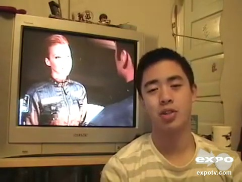

预测：Negative；强度：-1.040；主要参考模态：text
下表贡献为遮挡前后固定目标类别概率的差值。正值为支持，负值为抑制；不是现实因果贡献或可加百分比。
| 模态 | 类别概率变化 | 强度变化 | 关键证据 |
|---|---|---|---|
| text | 0.3285 | -0.8028 | i would be ashamed 0.5618536585365853–1.3444355400696864秒 (ctc_forced_alignment_feature_position_mapping_assumed) |
| audio | -0.0429 | 0.0830 | i would be ashamed 0.5618536585365853–1.3444355400696864秒 (ctc_forced_alignment_feature_position_mapping_assumed) |
| vision | 0.0712 | -0.1524 | i would be ashamed 0.5618536585365853–1.3444355400696864秒 (ctc_forced_alignment_feature_position_mapping_assumed) |
颜色越深表示门控越大；此图只显示选择行为。
text
iwouldbeashamedtohavemadethisfilmifiwasadirectoraudio
iwouldbeashamedtohavemadethisfilmifiwasadirectorvision
iwouldbeashamedtohavemadethisfilmifiwasadirector关键窗口按对固定目标类别的绝对影响选择，可能提供支持或抑制证据。完整逐窗口数值见配套CSV。
